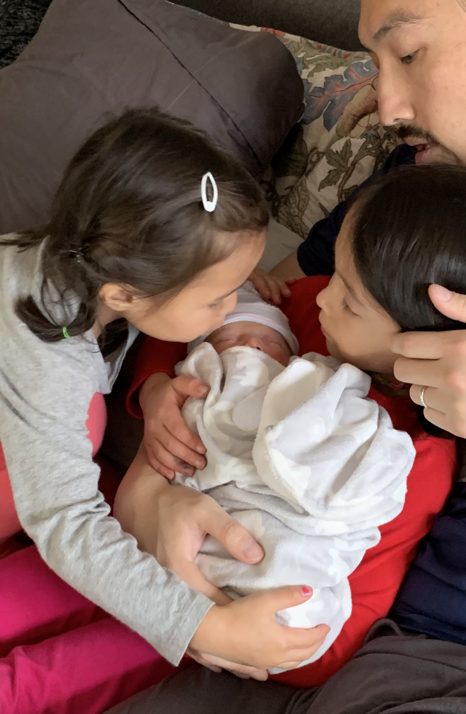
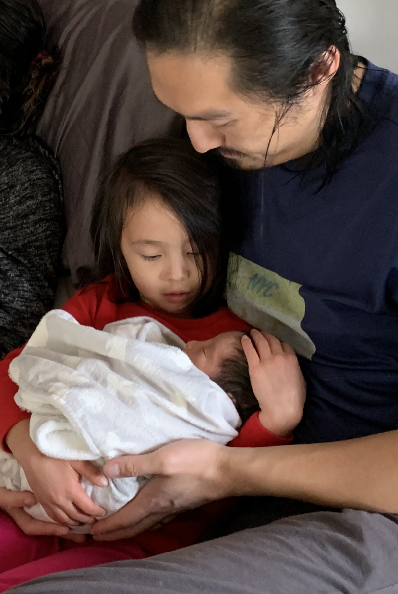
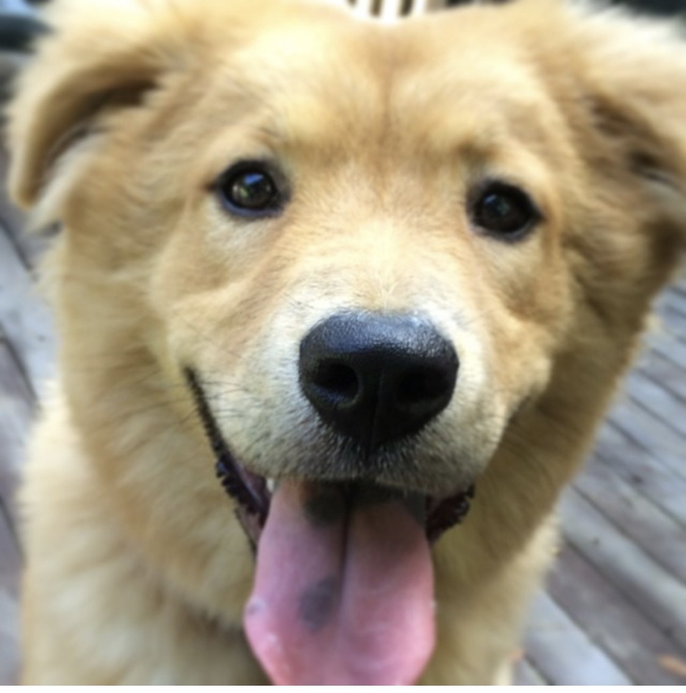

Jerry Chao’s Website
This is Jerry Chao’s website
Welcome to my website. I am a pediatric anesthesiologist and clinical researcher at Albert Einstein College of Medicine, Montefiore Medical Center studying the neuroscience of early anesthesia.

A new addition to our family
My wife and I welcomed our third child, Violet Ruth Chao, born on October 28, 2020.
Big sisters Olive and Marigold are smitten!

Olive is a great big sister - already cuddling Violet super carefully

That look on Marigold’s face!
Our furry menagerie
Violet further displaces our pets: Hanky (our black lab/setter mix rescue, 5-and-a-half years old) and Benny (our black cat rescure, 2 years old). When we adopted Benny when he was a kitten, he immediately bonded with Hanky. We think Hanky was imprinted on Benny, who treats Hanky as a big brother in his pack. We call Benny our cat-dog because he behaves more like a dog that a cat! He even comes out on walks with us - off leash! They are best buddies.
Posey is our golden retriever and chow chow mix rescue, also around 5-and-a-half years old - here’s a picture of her when she was around 2. Not pictured is Cleo, our second cat - she is white with light gray splotches. Her brother Alfie died of pancreatitis last year :*( We have a furry menagerie in our house!

Links to other websites
Here are some links to other websites about me: